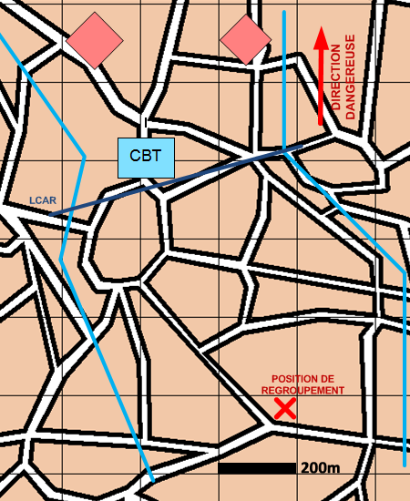

NIVEAU :Automate
ARME :Melee
MISSION :Jalonner
Objectif principal
- Renseigner
Modalités d'exécution
-
Organiser le dispositif pour attendre l'ENI:
- Premier échelon se partage le fuseau, se place juste devant la LCAR et jalonne sur chacun des axes ;
- Le GEN réalise le plan d'obstacles ;
- Les unités de mêlée restantes et les appuis feu sont en appui du premier échelon ;
- Les autres unités se postent en arrière du dispositif.
-
Le premier échelon progresse en gardant le contact visuel sur l'ENI et engage si l'opportunité se présente.
Schéma de modélisation

Paramètres obligatoires
Fuseau : Zone de responsabilité.
Direction Dangereuse : Orientation privilégiée des capteurs.
LCAR : Ligne de mise en place du dispositif initial
Point de regroupement : Point de regroupement à la fin de la mission
Paramètres optionnels
Nombre d'echelons (1 par défaut)
Obstacles: Obstacles à construire.
Valoriser obstacles: Indique si on valorise les obstacles après construction.